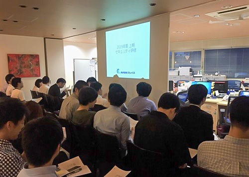
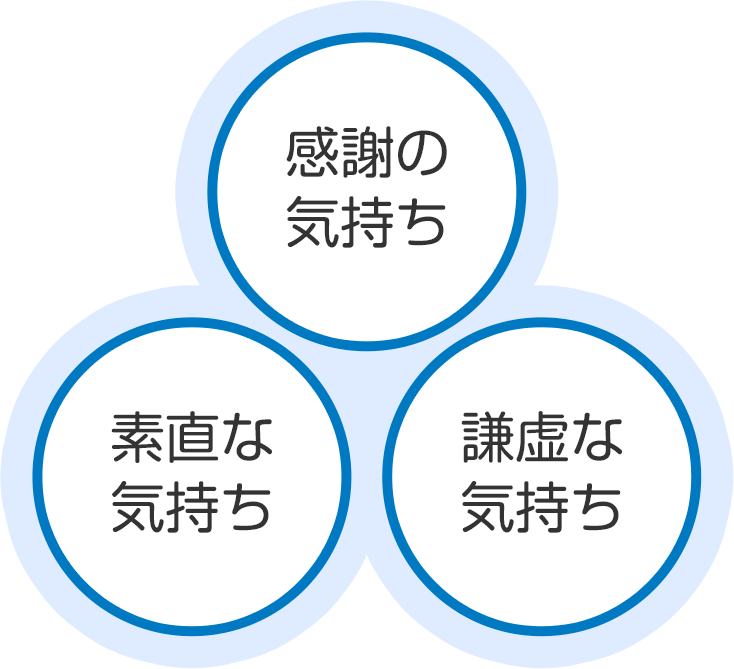
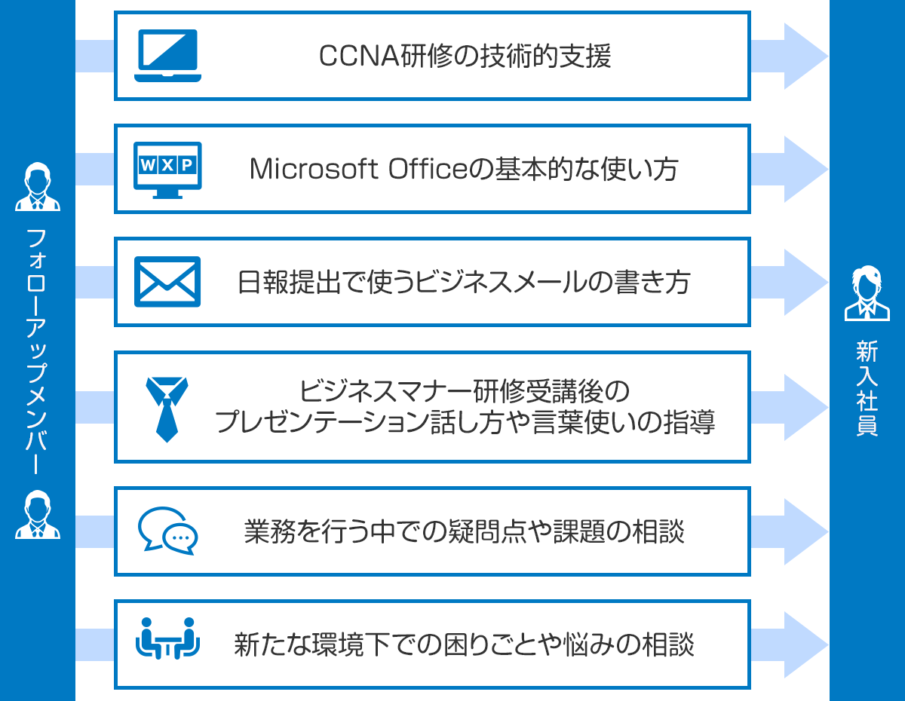
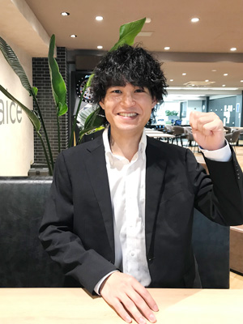
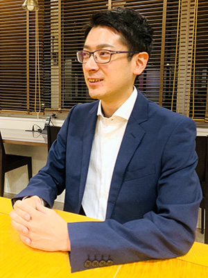
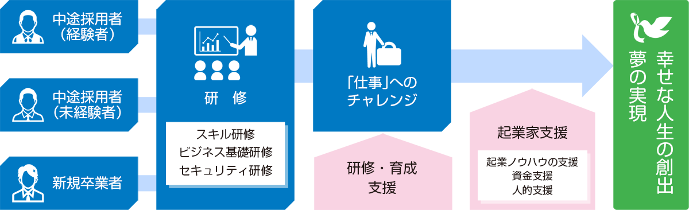

EDUCATION
教育システム
フォローアップ制度・エンジニアスター制度などで夢の実現・幸せな人生の創出を支援します

教育制度

弊社は、技術だけでなくマナーやコンプライアンス、個人情報保護知識などの“ヒューマンスキル”も兼ね備えたエンジニアを効率的に社会に送り出すため、エンジニア教育に大きな力を注いでいます。
外部の専門教育機関を活用するほか、社内には実践型研修を可能とした設備を設置しており、ネットワークの未経験者も勉強・経験・知識習得ができます。
さらに、先輩エンジニアが実践で得たノウハウを懇切丁寧に教える体制も充実しており、研修後の実践業務レベルにおいても相談できる人的ネットワークが出来ます。
また、新入社員を先輩社員がサポートする弊社ならではのフォローアップ制度もあり、IT資格取得支援や様々な相談ごとにも乗ってくれます。
エンジニアスター制度
対象資格を取得すると、その内容に応じてポイントがつく制度です。合格ポイント合計により、ポイント数がUPし、資格手当金に連動しています。
資格の範囲は、公的資格からベンダー系資格までさまざまです。資格取得の際に学んだ知識が実業務での理解度の向上や応用力発揮に役立ちます。
社員自らがポイントの獲得を頑張り、スキル向上へ繋がり成長しています。また、技術者としての自信、そしてお客様からの信頼の獲得にもつながります。
3つの気持ちが形になったもの

我社では3つの気持ちを大切にしています。
それは、「感謝の気持ち」「素直な気持ち」「謙虚な気持ち」です。
新入社員は入社したらIT業界で活躍できるように知識と技術を身に付けてもらいます。
そしてその新入社員をフォローアップする先輩社員が数名つきます。
新入社員はおよそ１ヶ月半〜２ヶ月で目標とするIT系の資格を取得しますが、実はこれはかなり大変で、『今までこんなに勉強した事がない』というくらい勉強しなければなりません。
フォローアップメンバーは新入社員が困ったときに業務が終わった後、別の勤務地から駆けつけてわからないことを教えたりして助けてくれます。先輩には残業手当てがつくわけではないのですが、新入社員のために精一杯フォローをします。
まさに無償の愛です。
そんな先輩たちのフォローに対して新入社員は素直に、また謙虚に従い、目標としていた資格を取得することが出来るのです。
そのとき新入社員も先輩社員も笑顔になり、大きな感謝の気持ちが表れます。
こうして先輩から後輩への3つの大切な気持ちが形となり、連綿とつながっていきます。
フォローアップ体制は決して指示や命令ではできるものではありません。
3つの気持ちを大切にしている我社だからこそ実現できたものです。
フォローアップ制度
フォローアップ制度とは
新人社員を先輩社員がサポートする体制です。入社後のCCNAの資格取得に関する相談、ITスキルの習得方法、社会人としてのマナー、日常生活の困りごとなど、分からないこと、悩んでいることがあれば、何でも相談できます。クレイスにしか出来ないフォローアップ体制によってIT業界未経験の方も安心して成長していけます！

フォローアップメンバーの声
フォローアップメンバーへインタビューをしてみました。
K.Oさん［新入社員／2023年入社］
前職は建設の営業だったをOさん。
異業種からの転職の為、入社時はIT業界でやっていけるか不安を抱えていました。
そんなOさんをフォローアップリーダーやサブリーダーだけでなくクレイスの先輩もよく話を聞いてくれたそうです。
今では見違えるほど活き活きとしていて、常駐先で活躍しています！

- 全くの未経験でこの業界に踏み込んだ決め手は何ですか？
- 手に職をつけたいこと、そして英語を使った仕事がしたいという思いから、ITエンジニアを目指しました。
その中でネットワークエンジニアを志望した理由は、日々使っているネットワークの仕組みに興味を持ったからです。
また、この職業にはコミュニケーション能力が求められることを知り、前職での営業経験を活かせると感じて、この仕事に就きました。
- 入社後のフォローアップ制度の説明を受けたときの印象はどうでしたか？
- とても安心できる制度だと感じました。私自身、業界未経験だったため、研修制度が充実している企業を探していました。
3か月間のフォローアップ制度があると聞いたときに、その点に魅力を感じました。入社直後には先輩が2人ついてくれるため、疑問や不安をすぐに相談できる環境が整っています。
新入社員への手厚いフォローが、クレイスに入社を決めた理由の一つです。
- 実際にフォローアップを受けて、イメージと違うことや驚いたことはありますか？
- 入社前に想像していた以上に、フォローが手厚いと感じました。
フォローアップ担当の先輩は、常駐先での業務が終わった後に本社まで来て話をしてくれたり、休日にも関わらず時間を作っていただくこともありました。
また、フォローアップ期間が終わった後も、常駐先での業務について教えてくれるなど、今でも親身に接してくれています。
入社当初から現在まで、何でも相談しやすい環境を作ってもらえて、本当にありがたく、素晴らしい制度だと感じています。
- フォローアップを受けて嬉しかったことは何ですか？
- 常駐先に配属されても安心感があり、成長をしっかりと褒めてくれることが嬉しかったです。
業界未経験だったため、配属時には不安がありましたが、フォローアップ担当のお二人が同じ常駐先で親身に業務を教えてくださり、今では安心して楽しく仕事ができています。
配属当初から今でも、私の成長に期待してくれたり、やりたいことに対しても丁寧にサポートしてくれたことが本当に嬉しかったです。
- 入社を考えている方へメッセージをお願いします！
- この業界に初めてチャレンジする方は不安な点が多いと思います。
しかし、クレイスには未経験で入社した方が多くいます。
最初は大変かもしれませんが、諦めずに努力すれば必ず今まで頑張ってきて良かったと思えることが多く実感できます。
クレイスの先輩社員の方々は他の人が成長したことに対して、自分のことのように嬉しく褒めてくれる人がたくさんいます。
是非一緒に働いてクレイスを盛り上げていきましょう。
H.Tさん［フォローアップリーダー／2018年入社］
フォローアップリーダーを務めるTさんは、後輩思いで面倒見のいい優しい先輩。
真面目な話からくだけた話まで、なんでもお話してくれます！

- フォローアップを行ううえでどのような心がけをしましたか？
- 新入社員は他業界から入ってくる方が多いので、その分不安を抱えていると思います。
最初は社内業務を行ないながらネットワークの資格取得勉強も並行する中で、自分にできることは、話し相手になり、まずは少しでもクレイスに慣れてもらうことと考えて、なるべく常駐先業務後に帰社して担当の新人とコミュニケーションをとるようにしていました。
- フォローアップをしていて楽しかった・嬉しかった出来事はありますか？
- やはり資格試験合格の知らせを受けたときです。
試験内容の不明点について相談を受け勉強を教えたりしていたのですが、当時試験の難易度が上がったこともあり、担当の新人がなかなか受からない時期が続きました。彼にとっても苦しい時期だったと思いますが、彼の配属先業務が始まる日の直前に合格の知らせをもらい、非常に嬉しかった記憶があります。よくやった！という思いでした。
- 入社を考えている方へメッセージをお願いします！
- フォローアップ制度で思う存分先輩に頼れる環境のため、先輩を通して社内の雰囲気に溶け込みやすいと思います。
また、熱意があればやりたいことをやらせてもらえる会社ですので、ぜひクレイスに入社して、一緒に色々なことに挑戦していきましょう！
T.Sさん［フォローアップサブリーダー／2017年入社］
フォローアップサブリーダーを勤めるSさんは2017年に未経験から入社した先輩社員。
フォローアップを通じて得たものを、今度は自分がフォローアップをする側として頑張っています！
- フォローアップ制度についてどう思いますか？
- 一番の目的は新入社員の方をサポートすることですが、担当社員側も成長することが出来る制度だと思います。
ただ教育するだけでなく、各フォローアップ担当毎に色が出ているのがとても面白いです。
- フォローアップをしていて楽しかった・嬉しかった出来事はありますか？
- フォローアップ担当と新入社員でコミュニケーションを取り合い、お互いが成長していく過程はとても楽しいです。
また、フォローアップの担当をした新入社員が、「自分も今度はフォローアップする側をやりたい！」と言ってくれた事は、自分が行ってきたことが繋がったような気がして、とても嬉しかったです。
- 入社を考えている方へメッセージをお願いします！
- 業界未経験でも、技術者としてはもちろん社会人としても成長出来る会社です。
皆、面倒見の良い先輩社員ばかりなので、良い意味でびっくりすると思います。入社後に不安なことが多々あると思いますが、その不安はフォローアップ担当や先輩社員と一緒に解決出来ます！是非一緒に働きましょう！
起業支援
夢の実現・幸せな人生の創出のために
クレイスは、夢の実現・幸せな人生の創出のために支援します。
クレイスの基幹事業と連携価値の高いビジネスプランに関して、社員におけるグループ会社の起業を支援します。社長としてグループ会社の経営を担ってもらいます。
